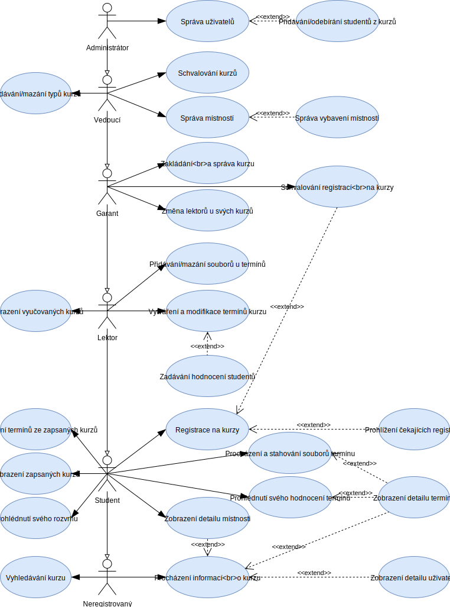

Projekt IIS: Varianta 5. - Škola: správa a registrace výukových kurzů
Název aplikace: School app
- Autoři
- Radek Duchoň
xducho07@stud.fit.vutbr.cz -
Návrh databáze, refactorizace, programování
- Jan Juda
xjudaj00@stud.fit.vutbr.cz -
Hlavní programátor, designer GUI, scrum master
- Josef Oškera
xosker03@stud.fit.vutbr.cz -
Server master, programování
- URL aplikace
- http://mallux.ga:40023/
- http://83.240.58.136:40023/
Uživatelé systému pro testování
Zde jsou uvedeni zástupci všech rolí uživatelů.
| Login | Heslo | Role |
|---|
| admin | admin | Administrátor |
| vedouci | vedouci | Vedoucí |
| garant | garant | Garant |
| lektor | lektor | Lektor |
| student | student | Student |
Diagram případů užití

Implementace
Při prvním spuštění serveru s nastavenou databází se databáze naplní předdefinovanými skupinami práv,
typy termínů a typy místností.
Frontend - Prezetační vrstva
Frontend je napsán pomocí CSS, Django HTML šablon, což je HTML obohacené o šablonovací příkazy,
které dogenerují HTML obsah podle atributů, které backend šabloně předá pomoc funkce render, a Javascriptu.
Tyto šablonovací příkazy fungují tak, že pokud v backendu z databáze získáme seznam kurzů, tak ho můžeme šabloně
předat a tak pak pomocí příkazu for může pro každý kurz z toho seznamu například vygenerovat řádek tabulky.
Tímto způsobem je udělané zobrazení obsahu ve všech tabulkách a seznamech, které jdou v informačním systému vidět.
Backend - Vrstva výpočetní logiky & datová vrstva
Framework django dělá nad databází vysokou vrstu abstrakce a umožňuje nám přistupovat k datům přímo přes
objekty definované v souboru IIS_school/models.py (jinak řečeno tento soubor specifikuje datovou
vrstu aplikace).
Většina výpočetní logiky se ukrývá v souboru school_app/views.py
Celý proces zpracování požadavku klienta probíhá tak, že klient zadá nějakou URL adresu (např. server:PORT/login),
z té se skriptem school_app/urls.py zjistí, jaká funkce v jakém souboru se má zavolat. Tato funkce se zavolá
a očekává se, že její návratová hodnota bude zobrazitelná HTML stránka.
Popis jednotlivých případů užití
- Zobrazení seznamu kurzů (všech nebo zapsaných) a vyhledávání v něm je realizováno ve funkci index,
respektive ve funkci home, která je funkcí index volána, pokud je přihlášen nějaký uživatel.
- Informace o kurzu jde procházet "rozkliknutím kurzu" (třeba ze seznamu kurzů), což otevře stránku detail kurzu,
kterou dodá funkce course_detail. Na této stránce je také vidět seznam termínů tohoto kurzu
(které se dají dále rozkliknout a prohlížet) a pro oprávněné uživatele je zde také možnost editovat kurz,
přidávat ke kurzu vyučující, místnosti, a přidávat a mazat termíny .
- Zobrazení informací o uživateli je implementováno ve funkci user_detail, podobně jako informace o
místnosti v room_detail, informace o jednotlivém vybavení v equip_detail a informace o termínu
v term_detail. Ve funkci term_detail mohou studenti vidět svoje hodnocení termínu a oprávnění uživatelé editovat
termín, zadat hodnocení studentům a přistoupit na stránky se přehledem souborů termínu a nahráváním či mazáním souborů.
- Přehled souborů termínu a možnost jejich mazání uživateli poskytne funkce files a nahrávání souborů funkce upload.
- Přihlašování a registrace uživatelů (do systému) je spravována funkci login.
- Registrování studentů do kurzů je realizováno ve funkci course_register a zde lze také vidět čekající registrace.
Spravování registrací je v register_manage.
- Uživatel si může zobrazit seznam pro něj relevantních termínů v záložce Termíny, kterou implementuje funkce terms.
- Vykreslování rozvrhu zařizuje funkce schedule.
- Lektoři a více privilegovaní uživatelé si mohou zobrazit seznam kurzů, které vyučují v záložce Moje kurzy.
Obsah této záložky generuje funkce my_courses.
- Vytvoření nového kurzu má na starost funkce newCourse.
- Spravování místností je pak přístupné díky funkci rooms. Jednotlivé vybavení do místností lze zdávat do
systému přes funkci equipment.
- Schvalování kurzu lze provést hromadně z funkce course_approval nebo individuálně v detailu kurzu.
Z detailu kurzu lze kurz také smazat.
- Přidávání a mazání typů kurzů je implementováno ve funkci courseTypes.
- Správa uživatelů (editace, potvrzování registraci či změna hesla a další) podporuje funkce users.
Databáze
ER diagram

Model databáze je popsán v souboru IIS_school/models.py, ze kterého se generuje struktura databáze.
Instalace
Postup instalace na server
- Databáze (postgres)
Je zapotřebí mít nainstalovaný balíček docker.
následující příkaz vytvoří kentejner "postgres",
--publish exportuje výchozí port databáze na port 40010,
-e POSTGRES_PASSWORD= nastaví heslo k databázi (uživatel je "postgres"),
--volume připojí "místní složku":"do kontejnerové složky" (pro možno vynechat)
Příkaz:
docker run --detach \
--name postgres \
--publish 40010:5432 \
-e POSTGRES_PASSWORD=jenikuutikejrychle \
--volume /home/sdilene/FLASH/SERVER/docker/postgres/data:/var/lib/postgresql/data \
postgres
- Server (vestavěný django server)
Je zapotřebí mít nainstalovaný balíček python a python3-pip.
Dále je zapotřebí mít balíček django.
Django lze nainstalovat jako systémový balíček např "pacman -S python-django". (Upozornění - např. v repozitáři ubuntu je velmi zastaralá verze.)
Alternativa instalace djanga je pomocí python instalátoru pip3 příkazem "pip3 install Django==2.2.6".
Dále jsou zapotřebí balíčky python3-psycopg2, bcrypt (instalovat přes pip3).
Více informací viz "Softwarové požadavky".
Softwarové požadavky
Django - testovaná verze je 2.2.6 (nižší verze než 1.7 nejsou podporovány, verze 3.0 nefunguje)
Python - testované verze jsou 3.6.8, 3.7.5 a 3.8.0 (python2 není podporován)
Docker - testovaná verze je 19.03.5-ce
Postgres - instalován v rámci vytvoření kontejneru, testovaná verze je 12.0-2
python3-psycopg2 - testovaná verze je 2.7.4
bcrypt - instalovat pomocí pip3, testovaná verze je 3.1.7
Vyšší verze než zmíněné by měly též fungovat, ale není to garantováno.
Příprava
- Rozbalit archiv s projektem.
- Přesunout se do složky s projektem.
- V souboru IIS_school/settings.py je list "ALLOWED_HOSTS" obsahující povolené host ip adresy.
V případě potřeby přidejte další.
Inicializace databáze
- Pro inicializaci databáze je nutné mít nainstalovaný framework django z předchozích kroků
- V souboru IIS_school/settings.py v sekci DATABASES nastavte připojení "default" databáze na vaši požadovanou databázi (Více info ZDE).
Databáze by měla být prázdná. Pokud nemáte k dispozici žádnou běžící databázi, tak lze použít SQLite.
- Spusťte skript "python manage.py migrate", který by měl celou databázi připravit.
Spuštění
Pro spuštění databáze je nutné zadat příkazy:
- docker start postgres
#(pouze pokud již není spuštěn (to lze zkontrolovat pomocí příkazu "docker ps"), ale pokud již kontejner spuštěn byl, nic se neděje)
- python3 manage.py runserver 0:[port]
# 0: zpusobí že server bude přijímat spojení ze všech ip adres
# [port] je port na kterém běží webserver, např 8000